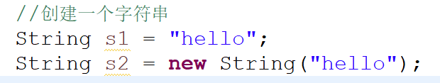

------------------------------------------------------------------------------------------------------------------------------------------------------
String类:
是一个不可变类(即字符串对象一旦创建,对象的字符序列就不能更改)
创建一个字符串的两种方式如下:

上图其实很好理解,String是个引用数据类型,而引用类型本来就是一个类, 所以当然可以通过第二种方式来创建一个字符串, 这就是创建了一个String对象。而第一种方式中,因为赋值运算符左边是定义了一个引用,而右边是在方法区里新建了一个对象, 所以"hello"其实也是创建了一个对象(和new String("hello")的效果类似但不完全一样),创建的是一个"特殊的对象",这是String类独有的创建对象的方式,(因为String比较常用,所以这也是为了和基本数据类型赋值的方式一样, 简单方便的使用; 而其他的类都是通过new来创建的,无一例外), 和其他类创建对象的方式完全不同。这种创建String类对象的方式的判断依据是, 只要被双引号引起来的一串字符,编译器就会将它作为一个String对象, 既然是一个对象那么就可以通过"对象.成员"的方式调用类中的成员,如下图:

但要注意的是: 上面两种创建字符串的存储方式是不同的,第二种方式是标准的创建对象,自然是存在堆里的,而第一种方式创建的字符串对象则是存在方法区里的常量池里,所以为什么说双引号引起来创建的String类对象是一个特殊的对象。
常量池: 方法区里面有块区域,专门用来维护常量数据的。维护在编译期能够确定的并且能够存储在字节码中的数据(即必须是带final的 类、接口、方法以及变量,并且要在编译期能够确定的,有的带final的不一定能在编译器确定)。既然是常量池,也就是说里面的变量都是带final关键字的,这也是为什么说String类的对象的字符序列不可更改的原因(而且用第二种方式创建的String对象存储在的char[]数组也是带final关键字的,即不可更改的,但要注意,字符串在常量池里的存储方式是以对象的方式存储的,而不是以char[]数组的形式存储的, 否则怎么可以用"字符串.成员"这种方式调用String类的方法)。 所以常量池只有在池里不存在相应的字符串常量时才会新建该字符串常量,存在的话是不会创建的,直接引用已创建好的。这样的好处就是可以避免频繁的创建和销毁对象,减少系统的消耗。
第一种创建字符串的方式是: 先在栈里创建引用变量s1, 然后创建"hello"对象时首先会去常量池里面搜索一下有没有"hello"对象, 如果没有,则新建一个"hello"对象,并将s1指向新建的对象; 而如果"hello"对象已经存在的话就直接将s1指向已经存在的"hello"对象即可,不用新建。但要注意, 这样的话,相同的字符串常量的引用指向的就是同一个地址了, 如果进行某种修改, 则他们都会被修改(实际上也只有通过反射才能修改, 否则直接修改的话, 修改后会直接在常量池里创建一个新的的字符串常量,将进行修改操作的字符串引用指向新的字符串常量)。
而其实第二种创建字符串的方式就是: 先在栈里创建引用变量s2, 然后在堆里创建String类的对象, 创建对象时也会在方法区的常量池里寻找有没有"hello"对象,有的话在String类的对象里会有一个引用指向"hello", 常量池没有的话就新建一个"hello"对象并让String对象里的那个引用指向它。 注意:在堆处创建的其实是String常量池中的String对象的一个引用,然后将这个引用直接指向常量池。验证方法是创建一个类，包含成员变量String value="字面量"，和 String str = new String("字面量")。然后创建这个类的实例化对象，再通过反射去修改类中的value值，发现str的值也被修改了，充分说明它们最终指代的是同一个String，只是对于new操作，多了在堆中创建一个引用对象的中间步骤。value直接指代字符串常量池中的String对象，str指代堆中的引用对象，引用对象指代字符串常量池中的String对象
所以第一种方式的优势是,直接将引用变量指向常量池里的字符串常量(对象),而不用像第二种方式一样,每次创建字符串(即使是同一个字符串,比如用第二种方式创建两个"hello"字符串)都要在堆里先新建一个对象(只要new一次就在堆里创建一个新的对象),然后再将该对象里的一个引用指向常量池里的字符串常量(对象),虽然因为常量池的机制可以重复利用字符串常量, 但是第二种方式每次新建对象使用的堆空间还是实打实的比第一种方式多出来的。也就是说第一种方式是直接指向常量池,第二种方式是先指向堆,再指向常量池。

创建空串的两种方式如下s3和s4所示。注意创建了空串(s3、s4)和指向了空对象(s4)的区别, 指向了空对象是没有创建对象的, 而空串好歹创建了对象

看String类的定义就知道,字符串其实存储在一个char[]数组里(注意是带final的,所以为什么说String对象的字符序列不可更改), 当然这是针对jdk8.0来说的,后面的版本有所更改,会将字符串存储在了byte[]数组里, 这是为了节省空间, 因为一个char占两个字节而一byte只占一个字节

"=="对于基本数据类型来说判断的是值是否相等,因为基本数据类型里面存的就是值, 而对于引用类型来说,引用类型存的是地址,所以判断的是是否是同一地址, 或者说是否是同一个对象。而因为常量池的存在,下图中的s和s5就会是同一对象了,而s2和s7当然不是同一对象,而因为s2的引用是指向堆里的对象的原因(对象里才有个引用指向常量池),所以s和s2也必然不是同一个对象。(如果是equals的话则这几个比较的值全部会返回true)

因为常量池的存在,String对象的字符序列是不可更改的, 所以会出现如下图情况。在str1做了字符串拼接的操作后, str1输出的结果还是str1。而第三行代码的作用就是在常量池里创建了一个新的对象"helloabc",但没有引用指向它

稍微改下代码,让str1指向新的对象"helloabc", 则此时str1才会输出为helloabc

所以说String类型的字符序列进行频繁的更改的话,它只会不断的创建新的对象,而根本不会修改原字符序列,。所以String不适合字符序列做频繁更改的情况,这样系统消耗会特别大, 会大量创建和销毁新对象, 会影响系统性能
java中所有的方法,只要是取某个范围内的,它所取的区间都是左闭右开(前闭后开)的,即取的值包括起始位置,但不取终止位置。如下面的substring()方法
String类的方法:

contentEquals()方法可以比较当前String类型的字符串是否和StringBuffer、StringBuilder类型的字符串相等。参数就是StringBuffer或者StringBuilder。
replace(old,new)中,为了方便记忆,就直接new和old就传字符串即可,毕竟在同时支持输入参数是char和String时, 单引号引起的一个char字符和双引号引起的只有一个字符的String字符串是一样的,都能达到效果,那么就只用String作为输入更加好记忆, 比如说输入参数是'c'和"c"是在方法中起到一样的效果。indexOf()和lastIndexOf()方法也是一样的道理, 可以只用字符串类型来传参。同时, String类的所有的方法, 若需要传参的话,都支持传String类型的参数, 所以传参时能用String类型传就用String类型传,都优先考虑同一种数据类型, 也方便记忆。
indexOf()举例(lastIndexOf()是类似的): (下面的例子中,每 条输出语句后面是其输出的值)
当然如果传入的参数是字符子串的话,返回的结果就是字符子串中的第一个字符在当前字符串中的位置索引(如下图中的第二条输出语句)
(int类型转char会丢失精度,不建议用int类型作为参数)

去除字符串中所有空格的方法:

endsWith()和startsWtih()非常有用,尤其是endsWith(),可以用来判断是否是某个后缀名的文件,比如是不是以".txt"结尾, 这些都可以判断,如下图:(下图中两个语句都返回true)

compareTo()比较大小时, 比较的规则是按照两对应位字符的ASCII码的大小进行比较, 字符对应的ASCII码大则认为该字符更大。比较的方式是两字符串的对应位一位一位比较的,当第一次出现不相等的对应位时,则不再比较。当前字符串的该对应位字符 大于 参数字符串的该对应位字符, 则返回正数, 反之则返回负数。如果比较到了最后一位字符都一直相等, 只有全部位都相等并且等长时,才认为两字符串相等,返回0。如果比较到了字符串a的最后一位都一直相等,但此时字符串b还有字符, 则认为字符串b更大。

下图是compareTo的源码:
可以发现返回值实际上有两种情况:
(1)当前字符串和参数字符串对应位字符出现不相等时,当前字符串的该字符-参数字符串的该字符, 得出的结果也就是两字符ASCII码的差值。ASCII码大则谁大。
(2)比较到某字符串的最后都相等时, 用当前字符串的长度-参数字符串的长度, 也就是说哪个字符串长则谁大。

toCharArray()使用举例:

split()举例:
注意split()传参时只能是String类型而不能是char类型, 即使分隔符是一个字符也不能传char

contains()举例:
contains()的参数也不能传char类型

------------------------------------------------------------------------------------------------------------------------------------------------------
StringBuffer:
可变字符串类。意味着它创建对象后它的字符串序列是可以更改的, 如果字符串需要频繁更改,用StringBuffer的效率明显要高于String类
看下面的StringBuffer的例子:

当append后的字符串的长度超过了容量(即字符数组的长度)时会进行扩容 扩容容量大小是（字符数组的长度 * 2） + 2 ,但扩容的上限是： Integer.MAX_VALUE 。超过这个则会抛OOM异常。并且扩容调用的是Arrays.copyOf()将原先的数组复制到新容量的数组并覆盖原先的字符数组value,如下:

这也是为什么append可以不用写成sf1 = sf1.append("hello");的原因。
频繁的扩容(扩容会使用Arrays.copyOf()进行数组复制)也是会影响性能的, 所以如果你知道字符串需要一直增长,则最好趁早定好字符串容量(字符数组的长度)的上限,则可以避免多次的扩容(数组复制)操作,可以优化性能。如下就是预先定义字符数组长度为100。等到超过100,才会出现扩容的情况。

StringBuffer类中的方法:
toString(): 将StringBuffer类型的对象转换为String类型的对象。
capacity(): 无参方法。查看当前字符串所使用的字符数组的length(即容量)
trimToSize(): 无参方法。将字符数组的length缩小为 当前字符串的字符的个数。如果引用该字符串的变量多可以这么做,但一般没必要。如:

append():
在当前字符串的末尾追加字符串或者字符。除了上面常用的方法外, 还有很多重载方法。
insert(): 在当前字符串的某个位置插入字符串或字符。多重载方法。
setCharAt() : 修改当前字符串中的指定位置的字符。传参的第二个参数只能传字符不能传字符串
deleteCharAt(): 删除当前字符串指定位置的字符。
delete(): 删除指定范围内的字符序列
reverse(): 无参方法。反转当前字符串。
charAt()、indexOf()、lastIndexOf()用法和String类的方法一样。
StringBuilder类和StringBuffer类中的方法数量几乎一模一样, 大部分StringBuffer的方法StringBuilder都有,而且名字一样,方法用法也一样。(至少上面这些列举的方法StringBuilder都有。)
StringBuffer的这些方法的使用举例:

--------------------------------------------------------------------------------------------------------------------------------------------
String:
表示一个字符串类型
不可变类，
频繁 更改 字符串的字符序列 时，只会创建新的对象。
StringBuffer 和 StringBuilder
如果需要频繁更改 字符串的 字符序列，则使用这两个。
StringBuffer和StringBuilder的区别:
StringBuffer 线程同步，多线程，线程安全，但这样速度也会慢下来一些。
StringBuilder 线程非安全，但速度快, 适用于单线程的情况下。
-----------------------------------------------------------------------------------------------------------------------------------------------------------
System类的两个方法:
System.currentTimeMillis() : 当前时间的毫秒值。该毫秒值时从1970.01.01 00:00:00到现在时间 的毫秒的总值。
可以用下面的方法来计算某段代码所使用的毫秒值。即在该段代码开始前记录一下毫秒值, 在该段代码结束后再记录一下毫秒值,两次毫秒值的差值即为该段代码的执行毫秒数。

System.nanoTime() : 当前时间的纳秒值。比毫秒更加精确, 但是相比较于毫秒值, 纳秒值用的比毫秒值少,因为纳秒和毫秒都需要底层操作系统的支持,而好多操作系统都不支持纳秒。
-----------------------------------------------------------------------------------------------------------------------------------------------------------
正则表达式：
为什么要用正则表达式?
比如说如果要做登录验证, 虽然用各种判断条件可以达到验证的目的,但如果限制较多, 那么要写的代码就会很多 ,而且还可能漏掉某些情况, 而正则表达式则可以用简洁的代码做到严谨的验证机制。

正则表达式的规则:
[ ] 是表示枚举的方式。 如 [abc] 表示只能匹配 a,b,c中的任意的一个字符
[-] 是表示范围。 如[a-z]表示只能匹配 a-z 范围内的任意的一个字符
[^] 是表示否 如[^a-z] 表示匹配的是: 不是a-z范围内的任意的一个字符
{n} 它前一项的的匹配次数为n次
如邮政编码限制为6位数字,可写成: [0,9]{6}
更多规则如下:

java中写一个正则表达式的方式:

例子: (验证邮政编码)
输入错误是:

输入正确时:

同一个例子改写: (注意 , \d{6}等价于 [0-9]{6} ,但Java中反斜杠需要转义, 需要注意)

常见正则表达式验证举例:

-------------------------------------------------------------------------------------------------------------------------------------------------------------
包装类：
每一个基本数据类型都为它设计了一个包装类。基本数据类型只是一个关键字, 基本数据类型关键字只能用来表示一种数据类型或者说声明一种数据类型, 其他什么都做不了。而如果想对这些基本数据类型的变量有更多的操作或调用一些方法则需要用到包装类,因为只有类中才有属性和方法这样的东西,关键字是没有的。所以很多时候我们需要把基本数据类型的变量变成对象来使用,就需要"包装"成对象了。

这8种基本数据类型的包装类和String类一样, 是不可变类(即被final修饰)。所以,也就意味着, 这些基本数据和String一样, 有两种创建"对象"的方法(当然基本数据类型并不是对象,而只是一种变量,因为双引号引起来的变量比如"sdc"直接在后面加个 . 就可以开始调用方法了,说明双引号引起来就表示它是一个对象。而这些基本数据类型,比如int型的123后面加个 . 就没有任何作用, 毕竟谁知道你数字后面加个 . 是不是表示这是一个小数。但就算是char型比如'c'后面加个 . 也没有任何属性和方法可调用,所以基本数据类型都不是对象, 而仅仅只是个变量)。
但基本数据这两种方法又和String类型的两种创建对象的方法不同,实际上有本质差别。基本数据类型的两种方法一种是定义并初始化一个变量, 而另一种则是创建一个对象。如下:

装箱：把基本数据类型包装成对象。
下面是两种基本的装箱方式:
第一种是通过将基本数据类型通过传参给构造方法的方式创建对象,
第二种就是调用Integer类的静态方法valueOf()创建对象

还有一种自动装箱的方式, 这种方式会隐式的调用Integer.valueOf()方法, 下面两种写法是等价的:

拆箱：把包装类对象中的数值取出来。
拆箱和装箱一样, 也分为拆箱和自动拆箱,只不过拆箱只有一种方式,不像装箱有两种。拆箱是调用intValue()方法。自动拆箱则和自动装箱一样,也是隐式调用某方法, 自动拆箱就是隐式调用了intValue()方法。

实际使用时,都是自动拆箱和自动装箱用的多, 要能理解这种简单的赋值形式为什么可以使用。都是因为隐式调用了某个方法。
下图依然是装箱和拆箱的例子:

---------------------------------------------------------------------------------------------------------------------------------------------------------------
因为包装类是不可变类, 所以也跟String类一样, 也支持常量池的技术, 也就是说一些比较常用的数据已经预先在常量池里缓存好了, 除了 Float类和Double类以外,其他的包装类都有缓存。
boolean 是预先缓存了的, 因为它的结果也很简单,当然先缓存好, 它的所有值就一个0和一个1,对应false和true。
整数(包括byte、short、int、long)：他们这几种类型在常量池里预先缓存好的范围是: -128 到 127。其他值如果还需要就需要
char类型预先缓存的是: ASCII码为 0 - 127范围内的字符
如果用自动装箱或者用valueOf()方法装箱一个基本数据类型时(用"new"来装箱的方式是不行的,这样必然新建一个对象), 对应的基本类型的值是以上的范围内的量, 则不会新建对象,直接在常量池里面取即可。
注意: 以上说的是具体的数据类型的值的范围, 但实际上是各个包装类里的一个个对象里面存了这些值。范围里有多少个值,则该基本类型所对应的包装类就预先缓存了多少个对象。所以,我们所说的不会新建对象, 是只指用包装类的自动装箱和valueOf()方法装箱时(如Integer i = new Integer(5)),而不是用基本数据类型定义并初始化变量时(如 int i = 5;)。基本数据类型定义并初始化时跟对象根本没关系,也就没有什么新不新建对象的事了,所以上面所说的常量池有没有缓存这件事跟他们没关系。基本数据类型的定义的数据都是直接以值的方式存在栈里的, 所以也不会去调用常量池里的对象。
这种预先在常量池里缓存的情况, 我们从Integer的valueOf()方法就看的出来, 这里的Integer对象,从low到high相应的int值的大小已经缓存好了,保存在cache里。这里的low==-128, high==127,而cache是一个final修饰的数组, 数组里存的元素是一个一个的Integer对象, 而这些对象对应的int值正好是从-128到127。

举例说明常量池里到底有没有预先缓存,以及什么情况会用预先缓存的数据:

上图中, 22是属于-128~127范围内的, 所以不会新建Integer对象,而是直接引用常量池里的,所以i1和i2都会引用常量池里的同一个对象。而456不属于那个范围, 所以要创建Integer对象, 所以i3和i4要创建两个对象。而从i5和i6可以看出来, 即使22在那个范围里, "new"这种装箱的方式也不会使用常量池里已经预先缓存好的Integer对象里,毕竟"new"这个关键字就是用来创建(新建)对象的,所以必然会是使用新对象(此时的int类型的值22应该是会直接保存在堆里的Integer对象里 (而不会去像String类一样,再在对象内部用一个引用来引用常量池的int类型的数据22),而且常量池里也并没有int类型的值,只有Integer类型的对象)。
------------------------------------------------------------------------------------------------------------------------------------------------------
查看各个基本类型的表示范围的方法: (所有包装类都类似)

字符串转数字的三种方法: (注意num2和num3都用到了自动拆箱)
num1这种方法是最常用的。字符串转其他数字类型如double的方法则是Double.parseDouble(s); 转float则是Float.parseFloat(s); 。都是类似的

上图中,num2实际上就是valueOf(int)的重载方法valueOf(String)-先用parseInt()方法把s转换为数字, 再调用valueOf(int)方法, 如下图。num3所用的构造方法也是这个套路,所以还不如直接用parseInt效率高, 也不用再用一步拆箱的操作

数字转字符串的各种方法:
s1的字符串拼接是最常用的,直接拼接一个空串即可
从s2可以看出, 可以转字符串的类都有个toString()方法将其对象转换为字符串
从s3可以看出, valueOf()真是啥类型都可以"装箱"成valueOf()所在的类的对象。基本上可以进行类型转换的类都有个valueOf()函数来将别的类型转换为自己这个类的类型

包装类中的进制转换方法:

------------------------------------------------------------------------------------------------------------------------------------------------------
日期时间： (如何获取系统的当前日期和时间)
第一种用于日期时间的类库:
父类是 java.util.Date类
下面三个类是java.util.Date类的子类, 都位于java.sql包中:
Date(只表示日期) Time(只表示时间) Timestamp(日期+时间)
java.util.Date的应用举例

java.util.Date的三个子类的应用举例: (注意, 下图中除第一行代码外的三个类都是来自java.sql包中的, 尤其注意下图中的dt1对象对应的Date类,注意和java.util.Date类进行区分)

日期的格式化: (下面这些类都位于java.text包中)
格式化类的继承结构如下图所示。Format类我们用的最多的就是他的两个子类NumberFormat和DateFormat, 而NumberFormat类中用的最多的格式化类是DecimalFormat, DateFormat类用的最多的格式化类是SimpleDataFormat。
Format
|
NumberFormat DateFormat
| |
DecimalFormat SimpleDateFormat
SimpleDateFormat中的各种格式的表示形式如下:
年: y 月: M 日: d 时:h(h是12小时制,H则是24小时制) 分: m 秒: s 毫秒: S
(从上面可以看出,之所以用大写的"M"来表示"月",是因为小写的"m"要表示"分"。准确的来说"S"并不是表示毫秒,要格式化正好取秒的小数点后三位时才是表示毫秒)
想展示几位, 就用上面的字母占几位, 就像下图这样:

所以如上图所示, 这种方法可以用来格式化父类java.util.Date的时间格式。
Calendar类:
注意到上面的java.util.Date类的很多方法都已经弃用了,现在已经可以用java.util.Calendar类来代替Date类的功能了,而Calendar类是一个抽象类,所以Calendar类不能用new来创建自己的对象,可以通过静态方法getInstance()方法来得到一个对象,但其实得到的这个对象也是它的子类的对象(要注意Calendar类并不是单例模式, 因为它不是只允许系统中只能有唯一一个Calendar对象)。
需要注意的是: 抽象类(或接口)是不能创建对象, 但能引用它的子类(或实现类)的对象，也就是说, 抽象类(或接口)的引用如果要用new来得到对象时, 赋值运算符后边的new不能是new他们自己，但可以new他们的非抽象的子类(或实现类)。形如:
抽象类 抽象类的对象 = new 该抽象类的非抽象子类()
下面是Calendar类的常用方法:(需要注意的是Calendar是JDK8.0之前就支持的获取日期时间的方法)

LocalDate、LocalTime、LocalDateTime三个类:
(这三个类都位于java.time包中,这是JDK8.0版本新增的获取日期时间的方法,比Calendar更加简便)
三个类的具体使用见如下


还有一个同样位于java.time包中的Duration类也很好用:

———————————————————————手写与上传资料分割线——————————————————————